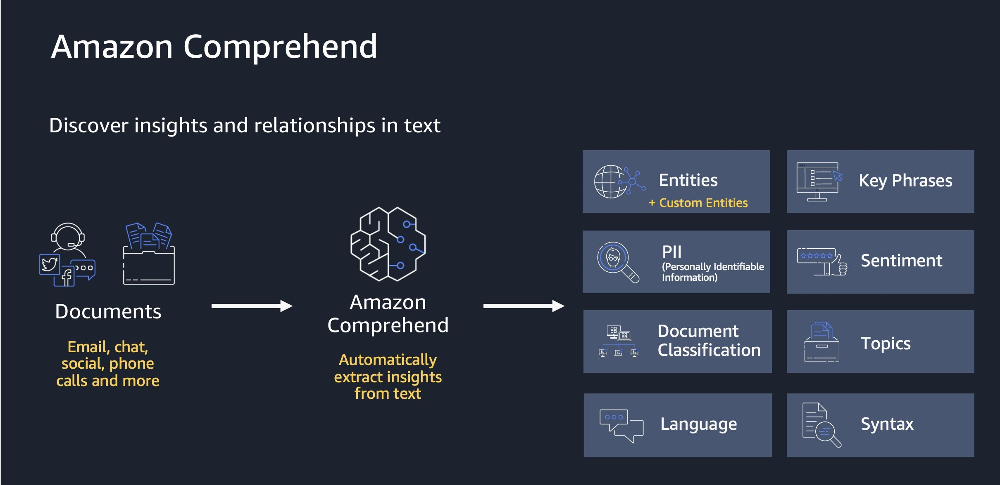

Understand and extract valuable insights from your text data with Amazon Comprehend.
Amazon Comprehend is a natural language processing (NLP) service that uses machine learning to find insights and relationships in text, no machine learning experience is required. Amazon Comprehend uses machine learning to help you uncover the insights and relationships in your unstructured data.
The value of using Amazon Comprehend lies in its ability to automate and scale natural language processing tasks, which can be time-consuming and challenging to perform manually or with traditional rule-based approaches. By leveraging Comprehend, businesses and developers can gain insights from unstructured text data more efficiently and effectively, enabling better decision-making, improved customer experiences, and increased operational efficiency.
The service identifies the language of the text; extracts key phrases, places, people, brands, or events; understands how positive or negative the text is; analyzes text using tokenization and parts of speech; and automatically organizes a collection of text files by topic. You can also use AutoML capabilities in Amazon Comprehend to build a custom set of entities or text classification models that are tailored uniquely to your organization’s needs.
